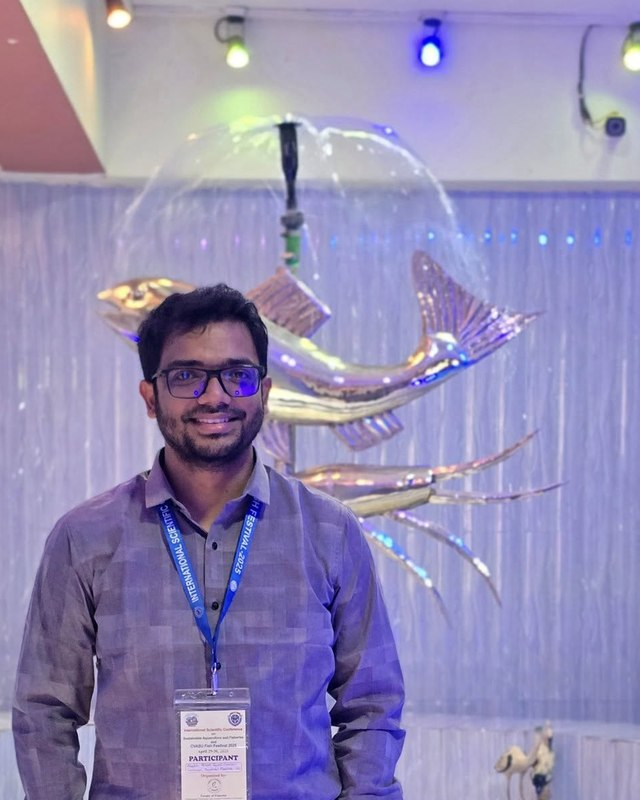
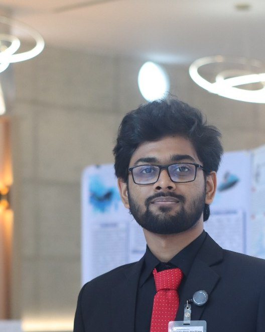

Who we are
A small, youth-led team spanning GIS, field science and community engagement.
Aqua Lead is a student-run project based at Bangladesh Maritime University, selected under the Youth4Climate Call for Solutions 2025. Here's who's behind it.

Project Lead & Principal Investigator
Nawshin Alam
- Designs the overall restoration pipeline and GIS suitability framework
- Leads field validation trips and community consultations
- Represents the project externally — incl. Youth4Climate Flagship Event 2025

Remote Sensing & GIS Analyst
Sheikh Fahim
- Processes satellite imagery for mangrove cover and degradation mapping
- Builds and maintains the site-suitability ranking models
- Supports the open-source monitoring toolkit
Field Research Coordinator
Amit Hasan
- Coordinates and conducts field validation and ground-truthing visits
- Collects soil, salinity and hydrology data at candidate sites
- Documents site conditions for the restoration-planning phase

Community Engagement Lead
Shamin Rownok
- Leads consultations with coastal communities and local stakeholders
- Integrates local ecological knowledge into site diagnosis
- Coordinates outreach and feedback collection
Data & Monitoring Analyst
Farjana Koly
- Manages field and remote-sensing data for the monitoring workflow
- Tracks canopy recovery metrics across validated sites
- Supports reporting and documentation for project partners
Our partners
Backed by Youth4Climate and Bangladesh Maritime University.
This project is funded by Youth4Climate 2025 (a joint initiative of UNDP and the Government of Italy) under the Call for Solutions, with technical support from Bangladesh Maritime University.